2009-05-22 メキシコ : 白昼、空の球体が分離して多数の小球体が直線上に延びる → たぶん自然現象


Update
・（2019-01-31 追加）（記事中で言及した）日本で撮影された謎の発光現象の生じた地域が地磁気異常地帯だったという話を追加。 ・（2017-07-08 追加）夜空に複数の奇妙な光点が出現する現象も、同様の自然現象かも…という話を追加。 ・（2017-05-25 追加）タイトルの現象が自然現象であることを裏付ける「かなり決定的な証拠動画」を見かけたので追加する。 ・（2017-05-14 追加）Youtube に up されている UFO 動画の中から同様の現象と思しき動画シーンを追加しておく。それらの UFO 動画はかなり以前に眼にしていたが、これまでこの事例と同様の挙動を示していることには思い至らなかった。はじめに
・一つ前の記事、・時速 160km で飛行するヘリの周囲を旋回する UFO （バスケットボースくらいのサイズ）が目撃されたという事件。ヘリに搭乗した警察官と地上の警官がこの UFO を目撃した。さらに、この UFO から野球のボールほどの大きさの光の玉が 3個放出されたという。に関連したと思しき極めて特異な現象を紹介する。 ・そしてこの UFO の正体が自然現象だという仮説を述べる。要旨（デタラメ）
・日時：2009年5月22日 ・場所：メキシコ ・下の動画の 47:48 から問題のシーンが始まり、51:57 まで続く。 ……途中…… ……途中…… ……途中…… ……途中…… ・2009年5月22日の日中の撮影。"Alfredo Carrillo" が動画撮影したシーンを切り出したのが下。彼の撮影したシーンは UFO が黒く映っている。 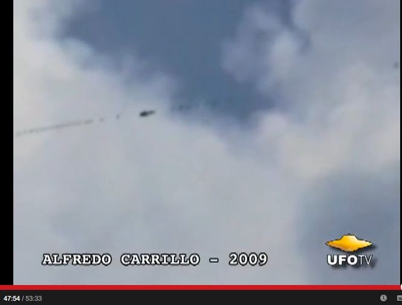 ・同じシーンを別の撮影者（"Pedro Hernandez"）が動画撮影していた。彼が撮影したシーンは UFO が黄色っぽく映っている（太陽を背にしているため）。動画の拡大シーンでは UFO が高速で横倒しになって自転しているのもはっきり見える。ドキュメンタリー動画（53分）
・THE UFO ENIGMA OF FLYING SPHERES & ORBS - FEATURE FILMコメント
・動画の中で、この UFO 群は「知的にコントロールされている」と Jaime Maussan（メキシコの有名な UFO 番組司会者）が断言している。だが、これは自然現象だろう。 ・この動画の UFO 群が自然現象であるとする理由は次のとおり。 ・比較的大きな玉から左右の両方向に直線上に小さな玉が次々と生み出されて伸びているシーンは電気的な反発力に従って、球電が分離し続けている…と考えると無理がない。 ・球電群が分離しながら直線上に伸びているが、その直線はたぶん直下の地殻の歪に沿っているのだろう。メキシコは火山地帯が多く地殻に断層があちこちにある。その直線上に延びた断層がピエゾ効果で上空に直線状に強い電界を生み出しているのだろう。その直線状の電界に沿って球電が発生、互いに反発しあって分離し、伸びたもの…このように推測する。 ・なお、球電が分離する現象については過去記事（2014.11.09）、 Rendlesham 事件（1980年、イギリス）に関する米国防総省の科学者の見解 のソースに記載されていた以下の内容（気象観測専門家の報告書に基づいたもの）に頼っている。The Weather Bureau’s study added: “Some of the cases of ‘ball lightning’ observed have displayed excrescences of the appearance of little flames emanating from the main body of the luminous mass, or luminous streamers have developed from it and propagated slant-wise toward the ground. In rare instances, it has been reported that the luminous body may break up into a number of smaller balls which may appear to fall towards the earth like a rain of sparks.” The document continues: “It has even been reported that the ball has suddenly ejected a whole bundle of many luminous, radiating streamers toward the earth, and then disapp-eared. Ref: http://mysteriousuniverse.org/2014/11/the-rendlesham-ufo-which-scenario/(2014.11.29)
（以下、2017-05-14 追加分）はじめに
・Youtube に up されている UFO 動画の中から、同様の現象と思しきシーンを含んだ複数の動画を追加しておく。それらの UFO 動画はかなり以前に眼にしていたが、これまでこの（2009年5月22日、メキシコでの）UFO 群と同様の挙動を示していることには思い至らなかった。具体例：その1
・55:00 あたり。２つの UFO が出現、片方がもう片方に吸収されている。後に分離している。 pic ・56:47 あたりの分離シーンに注目。２つの UFO が 3つに分離している。 これらの吸収、分離の挙動に注目すると、タイトルの（2009年5月22日、メキシコでの）UFO 群の挙動に酷似している。 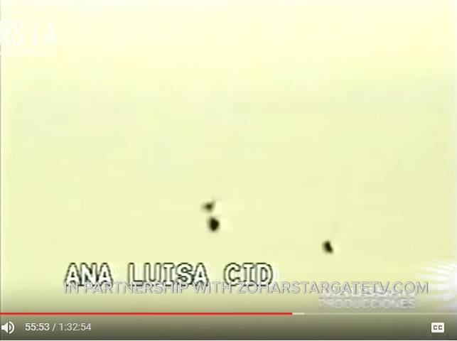動画（1:32:54）
・UFO Hotspot Strange Phenomena in the Skies of Mexico [FULL VIDEO]具体例：その2
・日本で撮影された地上に発生した強烈な光の動画。 pic ・注目すべきシーンが下の赤丸。強い光から右側方向へ直線状に小さな光の数珠が飛び出している。この光の数珠が飛び出す様子がタイトルの（2009年5月22日、メキシコでの）UFO 群の挙動に酷似している。動画（8:47）
・CHINA AND JAPAN'S? NEWS CAPTURES U.F.O.S ON THIER CAMERAS! (2017-05-14)
（以下、2017-05-25 追加分）はじめに
・タイトルの現象（2009年5月22日、メキシコ：白昼、空の球体が分離して多数の小球体が直線上に延びる）が自然現象であることを裏付ける「かなり決定的な証拠動画」を見かけたので追加する。 ・下の動画の中に、大学研究者がノルウェーの峡谷で、撮影した光の玉の動画映像が含まれている。過去記事、 ノルウェーの UFO が頻繁に出現する峡谷で現地取材した情報 （途中：その3） （2017-01-08） ノルウェーの UFO 映像：無人観測所と人間による現地観測 （2012-02-16） ノルウェーの UFO 目撃多発地帯での興味深い目撃事例 （途中：その1） （2016-05-12） ノルウェーの Hessdalen 峡谷で多発する UFO に関する地質学的仮説 （2014.05.17） UFO 多発地域で科学者グループが動画撮影した UFO のドキュメンタリー（途中：その1）（2012.11.13) でも紹介したが、下で紹介する映像は「光玉が出現し、それが分離して多数の小光体が直線上に延びる様子」が明瞭に見て取れる。下の該当箇所の動画を注意して見れば、明らか。過去記事の動画ではこの部分が明瞭ではなかった（or 私が見逃していた）。 ・この下の動画が消される可能性に備えて切り出し静止画を時系列で大量に添付しておく。 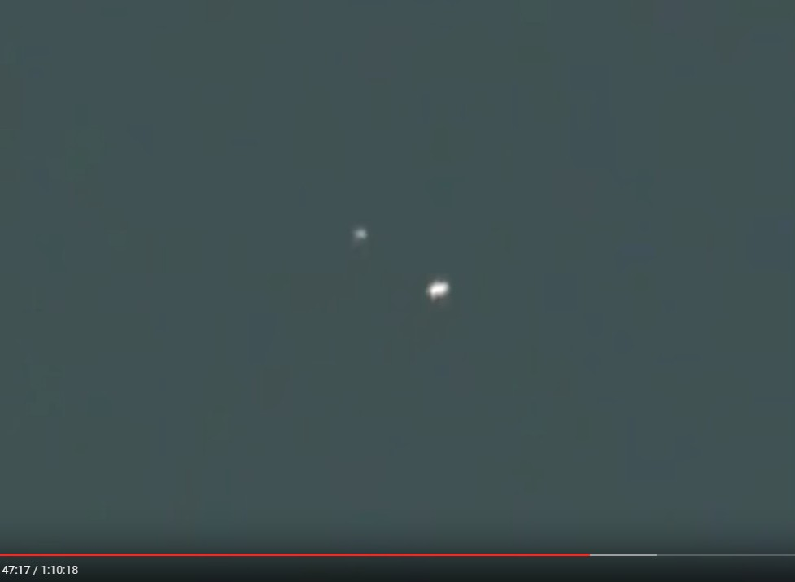 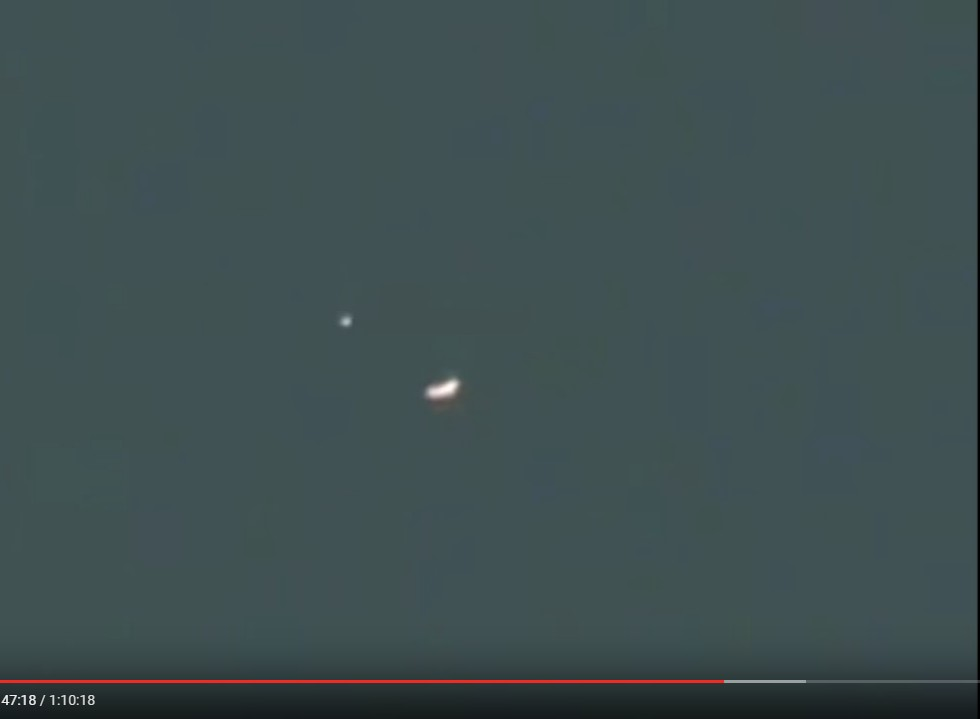 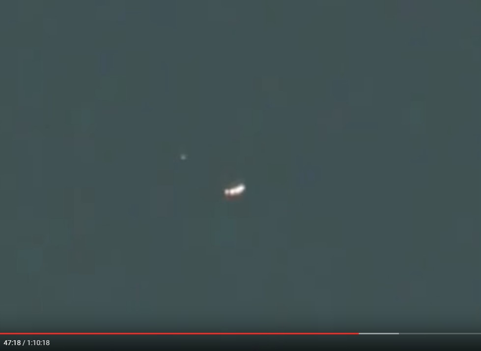 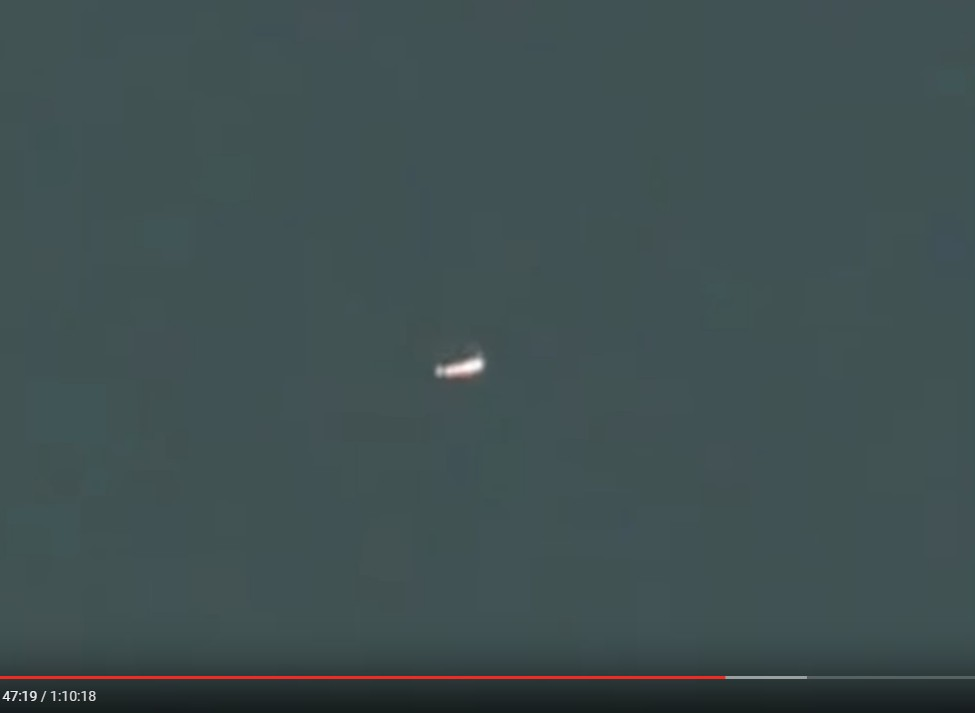 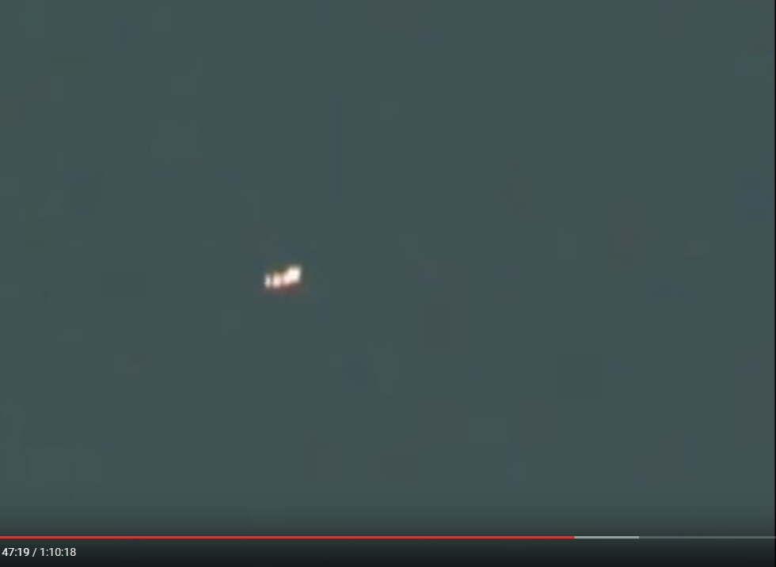 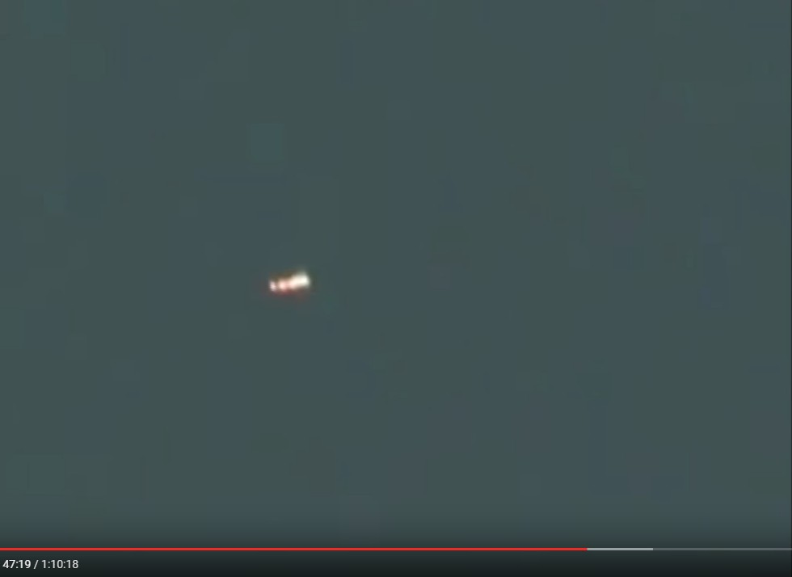 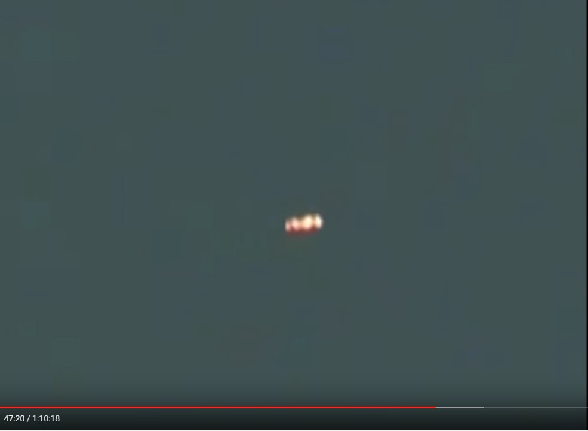 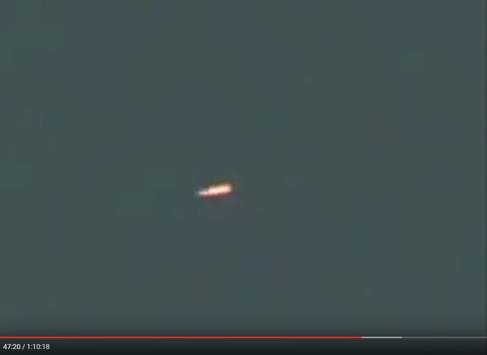 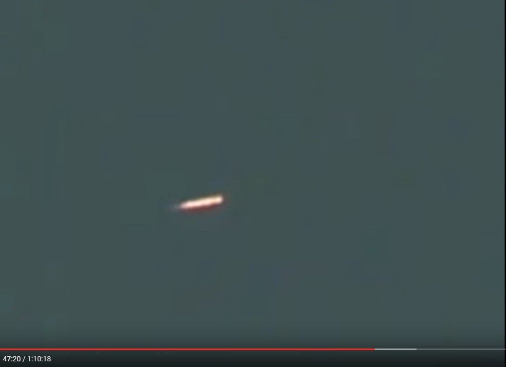 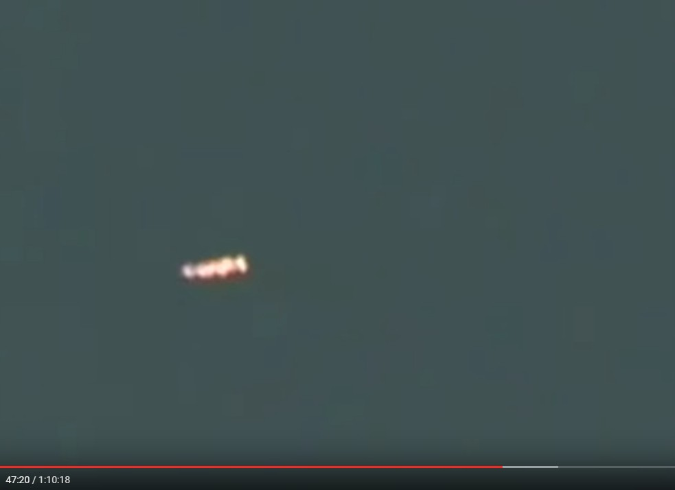 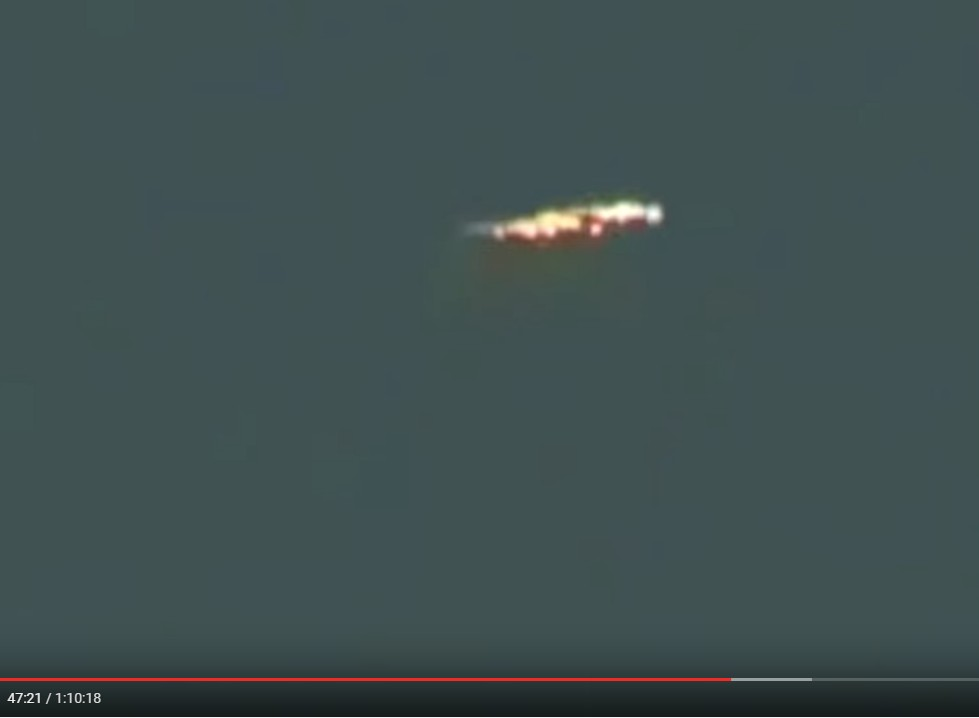該当箇所
・47:08～47:25動画（1:10:18）
・Authentic Crop Circles that Cannot Possibly be Man Made [FULL VIDEO] (2017-05-25)
（以下、2017-07-08 追加分）はじめに
・夜空に複数の奇妙な光点が出現する現象（その一例が下の動画）も、同様の自然現象かも。 ・静止画では判然としないので、動画で視ることを勧める。抜粋（デタラメ）
・8:00 あたり。（動画の再生開始時刻を設定済み） 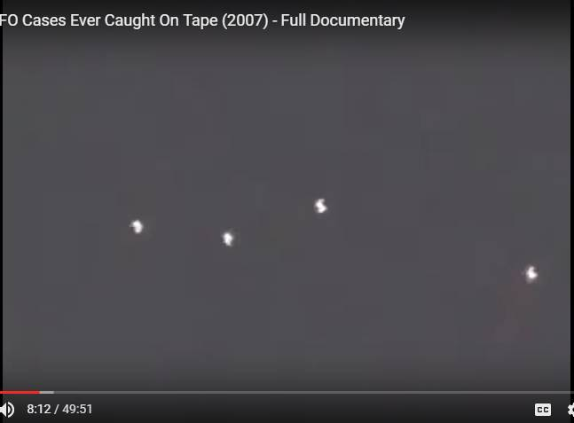動画（49:51）
・The Best UFO Cases Ever Caught On Tape (2007) - Full Documentary (2017-07-08)
（以下、2019-01-31 追加分）・上で取り上げた、日本で撮影された謎の発光現象に関する新たな情報を Steve Mera が語っているので追加しておく。
抜粋（デタラメ）
・28:35 あたり。 ・日本での動画撮影（下）された謎の発光現象の事例。この現場の一帯は磁気異常地帯だった。この現象が撮影された現場は火山活動が活発な地域で監視カメラで継続モニターされていた。（訳注：なので圧電効果による電界、磁界の異常が生じることは十分に予測できる） 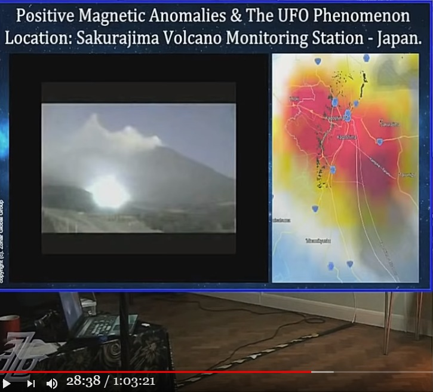 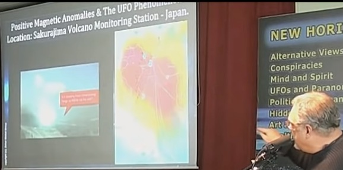 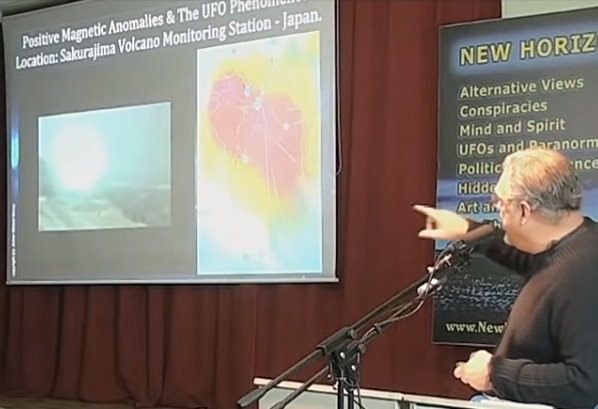 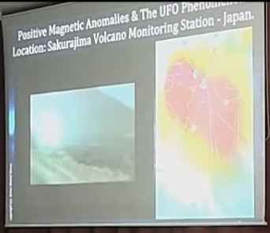講演動画（1:03:21）
・Huge UFO Disclosure Researcher Discovers Black Out Area's and Magnetic Anomalies (2019-01-31)履歴
(2014-11-29) 作成 (2017-05-14) 追加 (2017-05-25) 追加 (2017-07-08) 追加 (2019-01-31) 追加
初出
2009年5月22日、メキシコ：白昼、空の球体が分離して多数の小球体が直線上に延びる（途中：その5） (2019-01-31)
この記事の完了度: